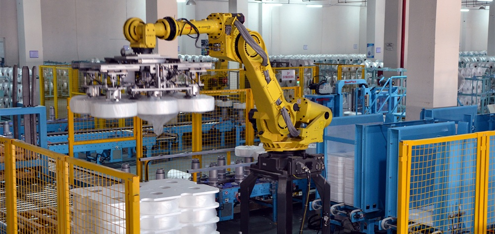
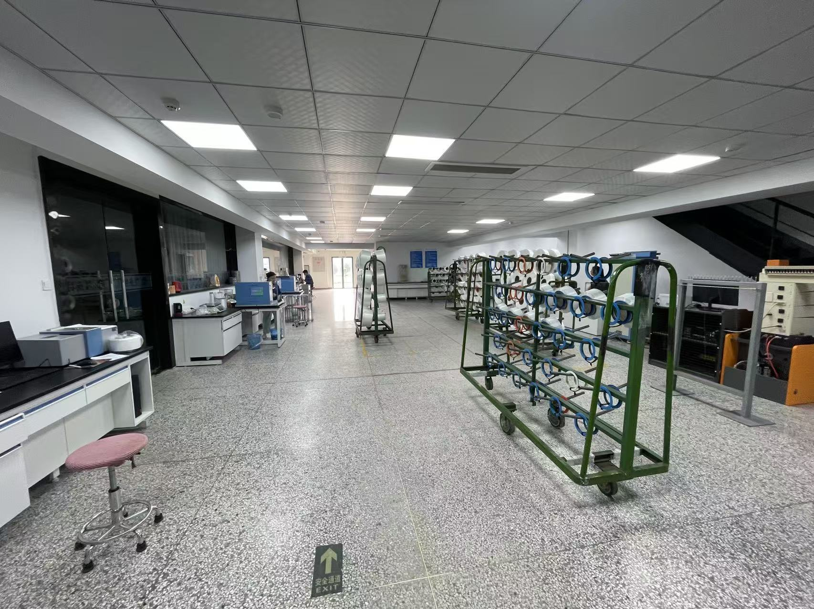

To guarantee our premium yarn products reach international clients in pristine condition, Shanyue Textile features a fully automated packaging facility. When yarn packages leave the winding floor, they are automatically routed via overhead monorails to the packaging unit. Heavy-duty industrial robotic arms execute high-speed sorting, automatic plastic wrapping, box packing, and palletizing. This eliminates manual error, ensures precise weight checks, and wraps every cargo configuration securely.
Workshop Gallery
Detailed visual references for our automated robotic packaging and quality testing processes.

Industrial Palletizing Robotics
This shows our heavy-duty 6-axis industrial packaging robot in action. Equipped with customized vacuum suction grippers, the robotic arm dynamically lifts finished spools and packs them into standard shipping crates. The system automatically structures pallets in interlocking cross-stack configurations, maximizing container cargo space and preventing bobbin sliding or structural damage during oceanic transit.

Quality Control & Inspection Lab
A view of the physical testing laboratory adjacent to the packaging line. Standard workbenches are equipped with electronic analyzers to check random package samples. On the right, mobile sample racks hold spools undergoing testing for tensile strength, denier uniformity, and dye-uptake consistency. Only spools that pass this strict inspection are cleared for packaging and labeling.
Packaging Capabilities
Operational efficiency and quality tolerances in the packing lines.
Packaging Highlights
Advanced features that guarantee perfect package delivery.
Robotic Palletizing
- 6-axis industrial robotic arms for dynamic sorting
- High lifting capacity suitable for bulky yarn pallets
- Interlocking stack patterns for maximum cargo stability
Moisture Barrier
- Automatic thermal shrink film wrap wrapping
- Export-grade moisture-barrier protection layers
- Cardboard corner protectors for edge stability
Full Traceability
- Automated weighing scales with instant database sync
- Unique barcode labels printed and attached dynamically
- Complete tracking from spinning slot to pallet box
Yarn Export & Packaging Inquiries
Contact our logistics team to discuss customized shipping or container configurations.
Contact: Leo Gao
Business Manager — Filament Yarn Division
Phone / WhatsApp: +86 18605755007
Email: leogao@yarnsvc.com
General: gaofei@yarnsvc.com